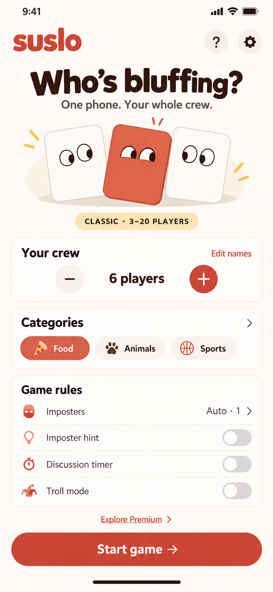
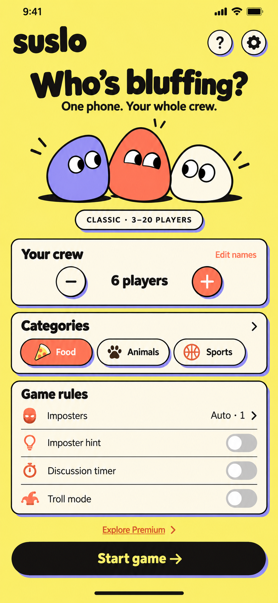
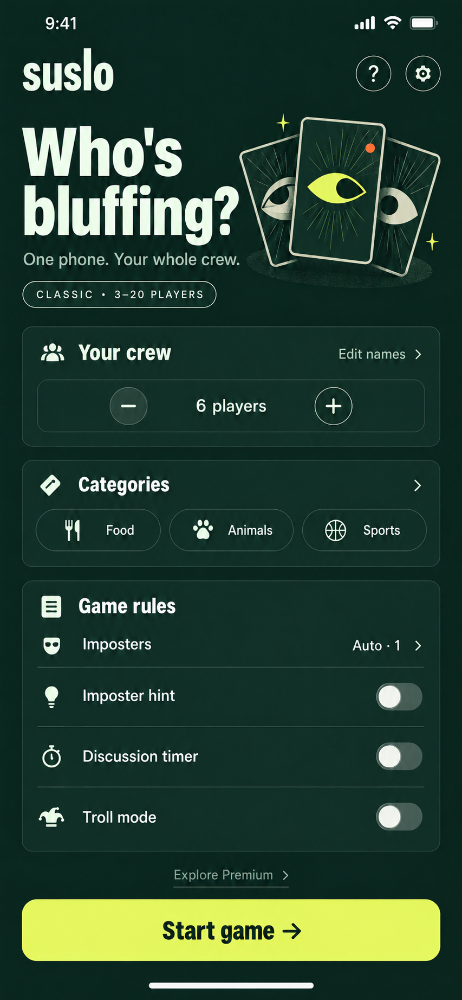

01 · Coral SocialA evolução mais próxima do mockup. Acolhedor, claro e familiar; cartas expressivas acrescentam humor e identidade.
02 · Suspeitos de Bolso ★Minha recomendação para a marca: personagens com olhares desconfiados, amarelo, coral e lilás. Divertido e reconhecível.
03 · Clube SecretoVerde profundo, lima e cartas com olhos. Mistério mais adulto; exige cuidado para não parecer um jogo de cassino.